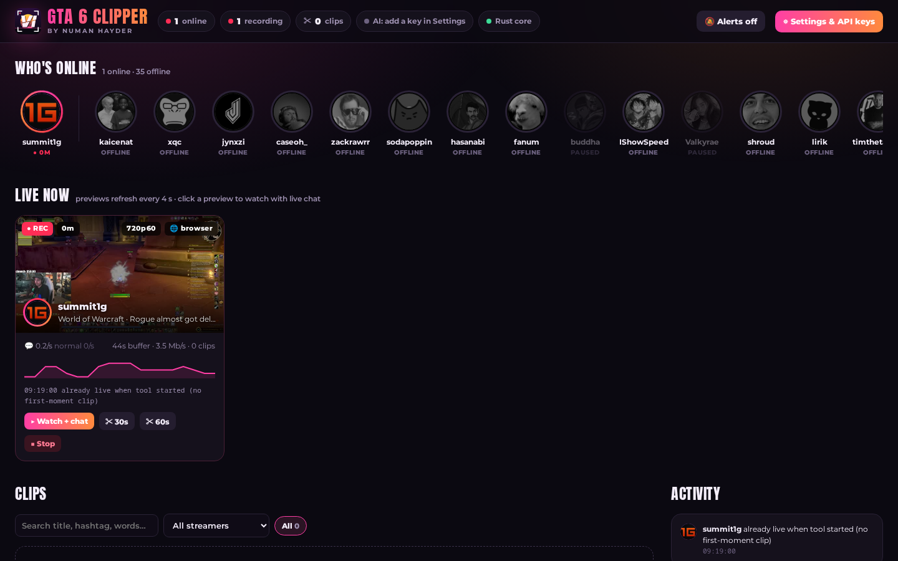

What gets clipped
Six triggers, running for every live stream at once.
🔴
Stream start
The first 75 seconds after a streamer goes live.
🌴
First time in GTA 6
The moment the category flips to GTA VI, once per streamer, forever.
💬
Chat peak
Chat runs 3× faster than normal, or floods with "clip it", KEKW and W.
🔊
Loud moment
A 12 dB jump above the running loudness: screams, hype, chaos.
🤖
AI moment
An LLM scores the last 30 s of speech and chat every 40 s.
✂
Manual
One click: clip the last 15, 30, 60 or 90 seconds.
Rust where it counts
A small native core, gtacore, handles the jobs that run all day. Everything still works in pure Python without it.
Quick start
Linux or macOS with Python 3.12, uv and ffmpeg. Rust is optional.
# clone and run: the first run installs everything git clone https://github.com/byte4day/gta6-clipper && cd gta6-clipper ./gtaclip-run run # dashboard open http://127.0.0.1:8787
Add a free Groq key in ⚙ Settings for AI titles, AI moments and fast transcription.